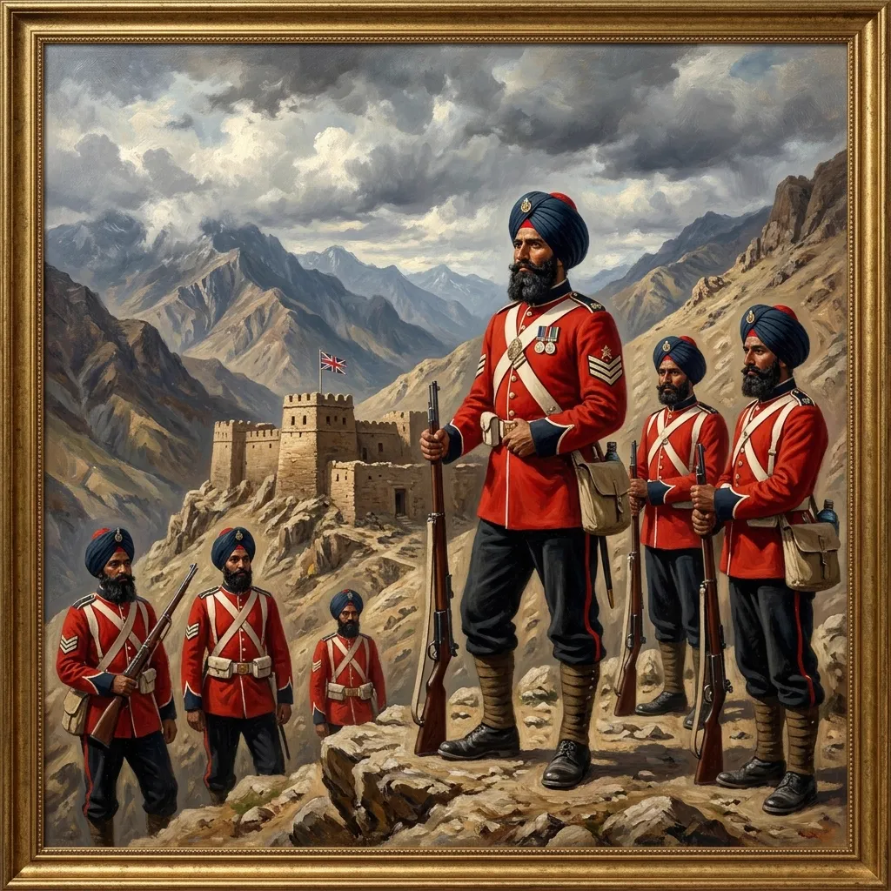
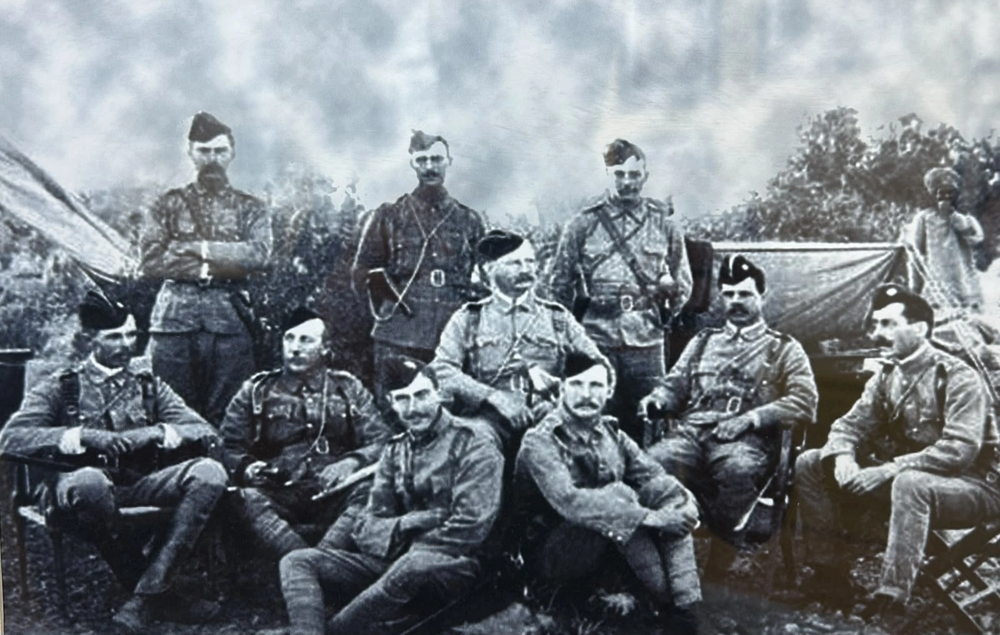
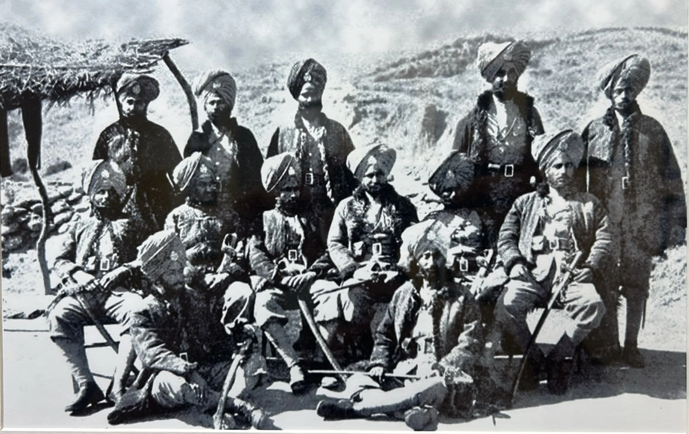

36वीं सिख की स्थापना लेफ्टिनेंट कर्नल जिम कुक ने 23 मार्च 1887 को बंगाल इन्फैंट्री के हिस्से के रूप में जुलुंदूर में की थी, जिसमें जाट सिखों की आठ कंपनियां और पंजाबी मुसलमानों और उत्तर-पश्चिम सीमांत प्रांत के आदिवासियों सहित अन्य वर्गों के 225 लोग शामिल थे।
1891 तक, बटालियन ने जुलुंदूर के आसपास प्रशिक्षण लिया और फिर दिल्ली चली गई। इसने 31 मार्च से 27 अप्रैल 1891 तक एंग्लो-मणिपुर युद्ध में भाग लिया और अपनी स्थापना के केवल पांच साल बाद अपना पहला युद्ध सम्मान, "मणिपुर" अर्जित किया।
1897 में, यूनिट ने उत्तर-पश्चिम सीमा पर फिर से कार्रवाई देखी और सारागढ़ी की महाकाव्य लड़ाई लड़ी।
1922 के पुनर्गठन के बाद, बटालियन को चौथी बटालियन, 11वीं सिख रेजिमेंट के रूप में पुनः नामित किया गया। 1945 में इसका नाम बदलकर चौथी बटालियन, द सिख रेजिमेंट कर दिया गया।
अपने फोन पर इस कलाकृति को देखने के लिए स्कैन करें।